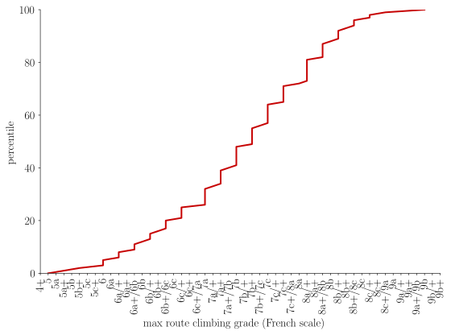
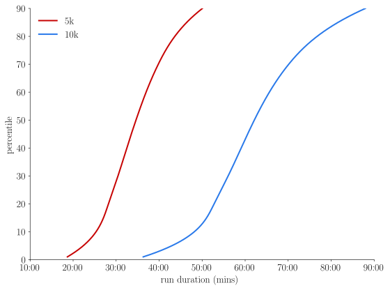

October 5, 2025
I went rock climbing yesterday. On the way up to the crag, my friends and I were debating about how to compare running times with climbing grades. I thought I'd try to answer this by gathering data from the internet.
First, rock climbing data.
I found this dataset, gathering the maximal climbing grades from many climbers who submited this information to the website 8a.nu. This is probably biased towards "good climbers", since the general population probably have never heard of this website.
Then, running data.
This was a bit more tricky, all I found was the results from 5k and 10k race in the general population, on the runrepeat website. This time, I have the feeling that it is not biased towards "good runners". It contains tables for a few percentiles of the population, and the corresponding timings. I have used a third order B-spline interpolation of these quantities to obtain a finer curve.
The distributions for all this data are shown below.


We can compare these two sets of curves by aligning the percentiles. We obtain the following correspondance table:
| Climbing | 5k | 10k |
|---|---|---|
| 6a+/6b | 50:04 | 87:58 |
| 6b | 48:31 | 85:16 |
| 6b/+ | 48:23 | 85:02 |
| 6b+ | 45:53 | 80:39 |
| 6b+/6c | 45:43 | 80:22 |
| 6c | 43:19 | 76:11 |
| 6c/+ | 43:12 | 75:58 |
| 6c+/7a | 41:26 | 72:53 |
| 7a | 41:16 | 72:36 |
| 7a/+ | 38:60 | 68:49 |
| 7a+ | 38:50 | 68:33 |
| 7a+/7b | 37:00 | 65:42 |
| 7b | 36:52 | 65:29 |
| 7b/+ | 35:01 | 62:43 |
| 7b+ | 34:54 | 62:32 |
| 7b+/7c | 33:20 | 60:19 |
| 7c | 33:14 | 60:09 |
| 7c/+ | 31:36 | 57:47 |
| 7c+ | 31:30 | 57:38 |
| 8a | 30:07 | 55:35 |
| 8a/+ | 29:59 | 55:22 |
| 8a+ | 27:53 | 52:18 |
| 8a+/8b | 27:47 | 52:09 |
| 8b | 26:13 | 49:40 |
| 8b/+ | 26:03 | 49:24 |
| 8b+ | 23:44 | 45:23 |
| 8b+/8c | 23:37 | 45:11 |
| 8c | 21:27 | 41:19 |
| 8c/+ | 21:17 | 41:03 |
| 8c+ | 19:31 | 37:51 |
| 8c+/9a | 19:20 | 37:31 |
I find that this is really over estimating the time it takes to run.
The results were produced with the following code:
#!/usr/bin/env python
import argparse
import kagglehub
import matplotlib.pyplot as plt
import numpy as np
import os
import pandas as pd
from scipy.interpolate import make_interp_spline
def minutes_to_str(t):
mins = int(np.floor(t))
secs = int(np.round((t - mins) * 60))
return f"{mins:02d}:{secs:02d}"
def main():
parser = argparse.ArgumentParser()
parser.add_argument('--out-dir', type=str, default=None, help='output directory')
args = parser.parse_args()
out_dir = args.out_dir
climbing_path = kagglehub.dataset_download("jordizar/climb-dataset")
climber_df = pd.read_csv(os.path.join(climbing_path, 'climber_df.csv'))
climb_grade_conversion_df = pd.read_csv(os.path.join(climbing_path, 'grades_conversion_table.csv'))
max_climb_grades = climber_df['grades_max'].to_numpy()
grades_range = [20, 84]
xticks = list(range(20, 88, 4))
xticklabels = [climb_grade_conversion_df['grade_fra'][i] for i in xticks]
run_5k_df = pd.read_csv("5k_run_CDF.csv")
run_10k_df = pd.read_csv("10k_run_CDF.csv")
p5k = run_5k_df['percentile'].to_numpy()
t5k = pd.to_timedelta(run_5k_df['time_hms']).to_numpy() / np.timedelta64(1, 'm')
p10k = run_10k_df['percentile'].to_numpy()
t10k = pd.to_timedelta(run_10k_df['time_hms']).to_numpy() / np.timedelta64(1, 'm')
BS_t5k = make_interp_spline(p5k, t5k)
BS_t10k = make_interp_spline(p10k, t10k)
plo, phi = np.min(p5k), np.max(p5k)
percentiles = np.linspace(plo, phi, 1000)
last_grade = None
print('Climbing | 5k | 10k ')
for p in percentiles[::-1]:
climbing_grade = np.percentile(max_climb_grades, 100-p)
grade = climb_grade_conversion_df['grade_fra'][int(climbing_grade)]
time5k = BS_t5k(p)
time10k = BS_t10k(p)
if last_grade == grade:
continue
print(f"{grade:>8} | {minutes_to_str(time5k)} | {minutes_to_str(time10k)}")
last_grade = grade
# plots
## 5k/10k race time distributions between 1-90 percentiles
fig, ax = plt.subplots()
ax.plot(BS_t5k(percentiles), percentiles, label='5k')
ax.plot(BS_t10k(percentiles), percentiles, label='10k')
ax.set_xlabel('run duration (mins)')
ax.set_ylabel('percentile')
x = np.linspace(10, 90, 9)
ax.set_xticks(x)
ax.set_xticklabels([minutes_to_str(t) for t in x])
ax.legend()
plt.tight_layout()
if out_dir:
plt.savefig(os.path.join(out_dir, 'run_distr.svg'))
else:
plt.show()
plt.close(fig)
percentiles = np.linspace(0, 100, 101)
## climbing grade distributions between 1-90 percentiles
fig, ax = plt.subplots()
grades = [np.percentile(max_climb_grades, p) for p in percentiles]
ax.plot(grades, percentiles)
ax.set_xlabel('max route climbing grade (French scale)')
ax.set_ylabel('percentile')
x = np.arange(28, 80)
ax.set_xticks(x)
ax.set_xlim(x[0], x[-1])
ax.set_xticklabels([climb_grade_conversion_df['grade_fra'][g] for g in x])
ax.tick_params(axis='x', labelrotation=90)
plt.tight_layout()
if out_dir:
plt.savefig(os.path.join(out_dir, 'climb_distr.svg'))
else:
plt.show()
plt.close(fig)
if __name__ == '__main__':
main()